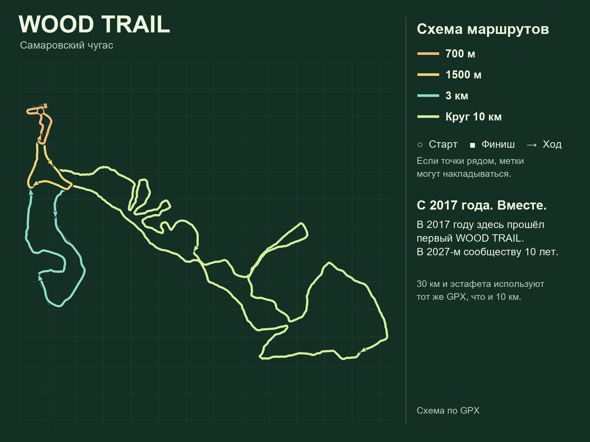

18 ИЮЛЯ
Просмотр трассы
Знакомимся с маршрутами: 10км, 3км, 1.5км и 700м.

25 ИЮЛЯ 2027 · ХАНТЫ-МАНСИЙСК
Самаровский чугас · Долина ручьёв
Дистанции от 700 м до 30 км и эстафета
Всё началось с ВУДТРЕЙЛ. В 2017 году мы впервые вышли на эти тропы. В 2027-м наше сообщество отмечает десятилетие.
ОДИН ЛЕС. РАЗНЫЕ ПУТИ.
Текущие цены действуют до 31 декабря 2026 года включительно.
0–6 лет
Первый лесной старт для самых маленьких.
7–12 лет
Больше тропы, больше движения.
От 13 лет
Попробовать трейл и почувствовать его характер.
От 18 лет
Полноценный маршрут по рельефу чугаса.
От 18 лет
Тридцать километров на лесных тропах.
От 18 лет · 3 участника
Три этапа. Одна команда.

Скачайте GPX нужной дистанции. Для 30 км и эстафеты используется круг 10 км.
18 ИЮЛЯ
Знакомимся с маршрутами: 10км, 3км, 1.5км и 700м.
24 ИЮЛЯ
Встречаемся накануне старта. Детали — после утверждения программы.
ДОКУМЕНТЫ
Правила и условия участия в нашем мероприятии.
Скачать DOCXОстанься в Ханты-Мансийске на выходные. Здесь — точка старта, варианты проживания и места для прогулки.
Старт в «Долине ручьёв», Ханты-Мансийск, ул. Калинина, 1.
Открыть точку старта на картеПарковка в день забега. Схему въезда и места стоянки добавим после согласования.

На трассе, в стартовом городке, рядом с участниками. За каждым тёплым стартом стоят люди.
Стать волонтёром